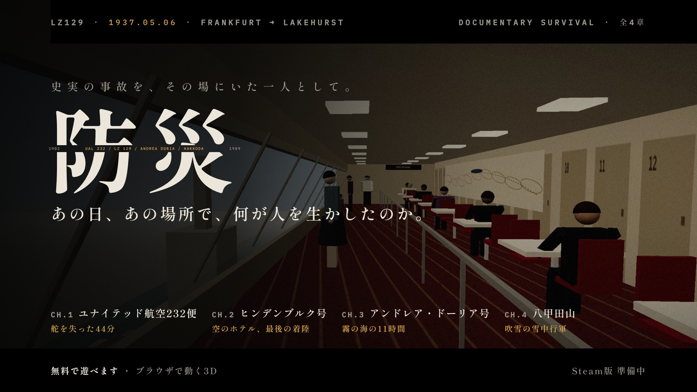
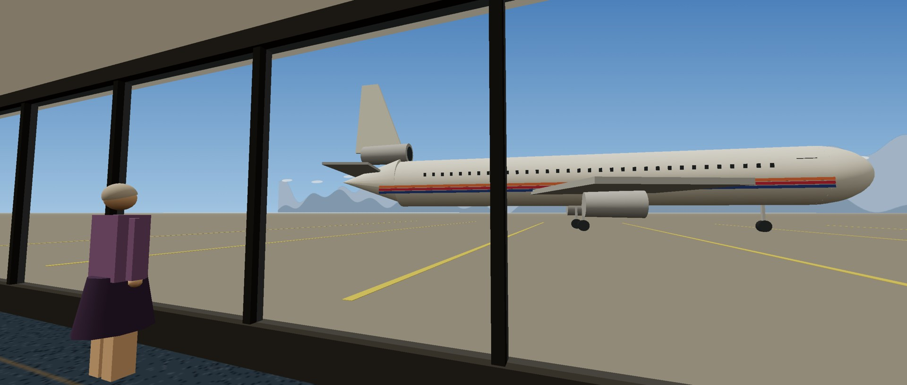
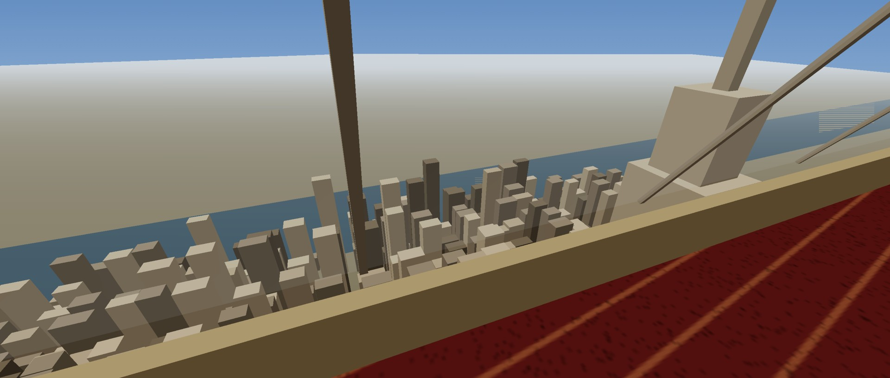
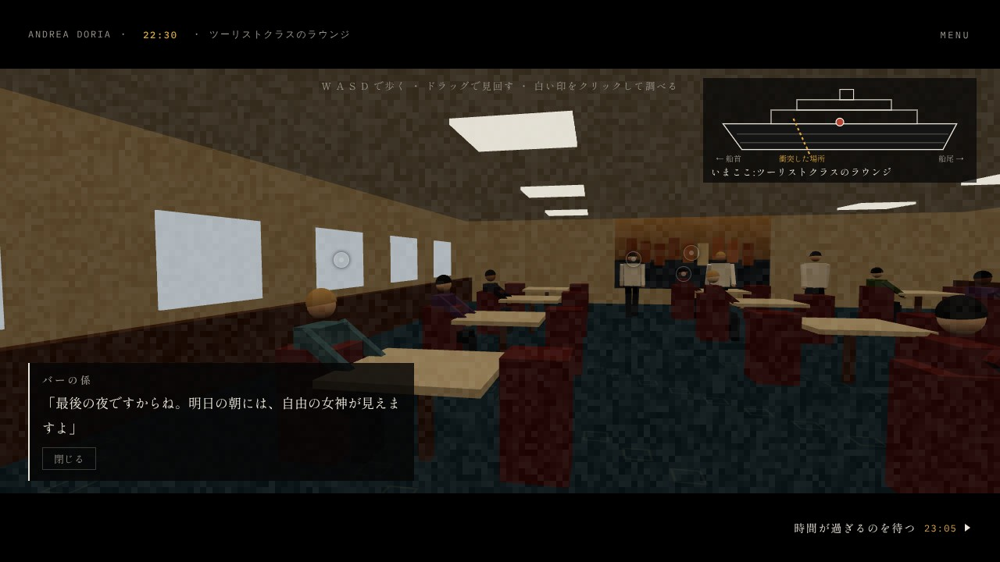
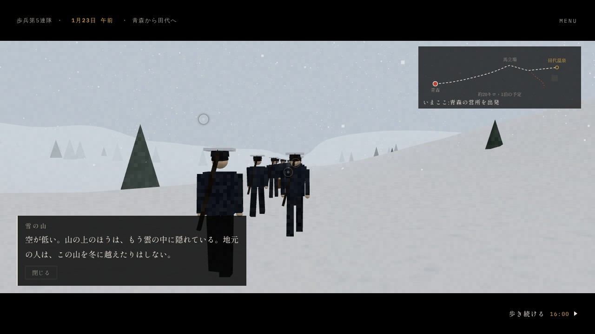
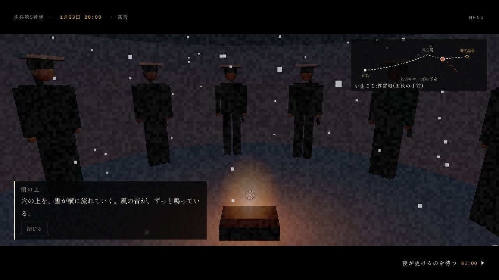

PRESS KIT
記事・紹介にご自由にお使いください。画像はすべてゲーム内の画面です。
公式ページ:wano49contact.github.io/bousai ・ PV:YouTube
画像をまとめてダウンロード(zip・約0.7MB)





制作・連絡先:wano(ふたりぼっちのSolitude) ・ wano49contact@gmail.com
アクセス数を数えるため、Googleアナリティクスを使っています。